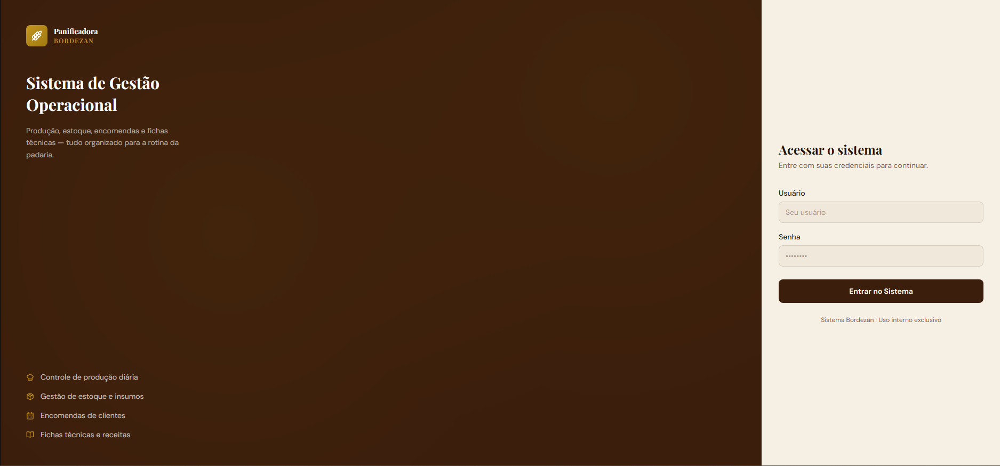
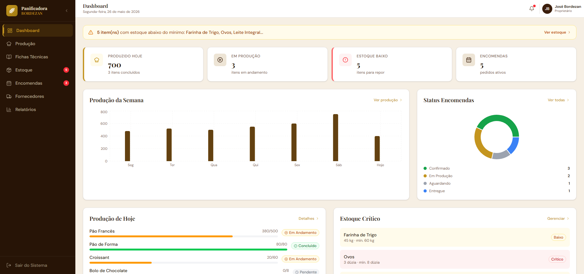
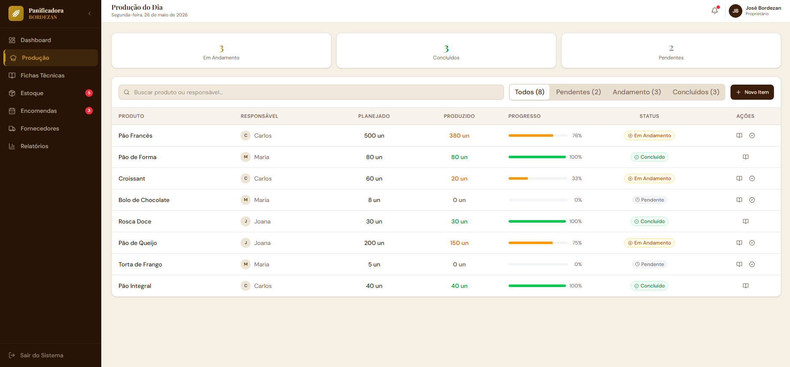
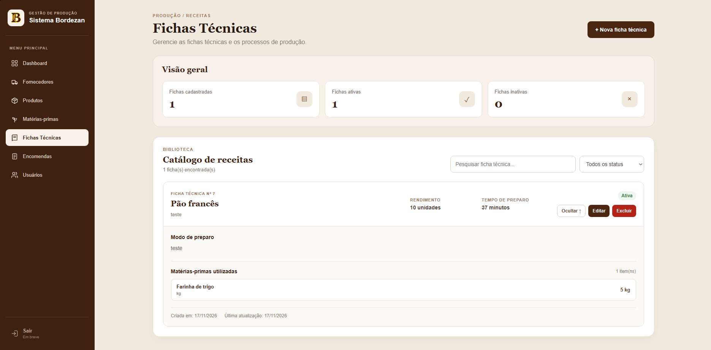
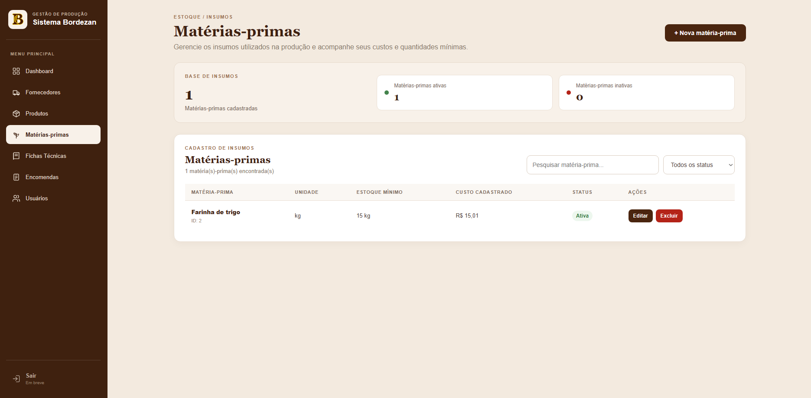
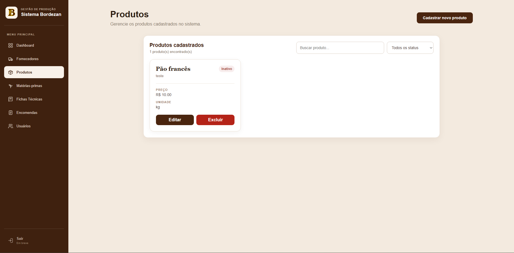
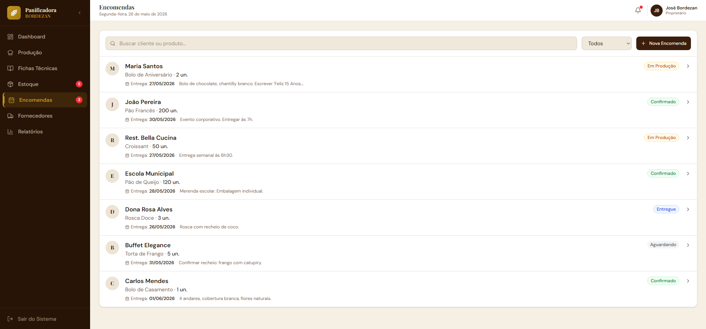
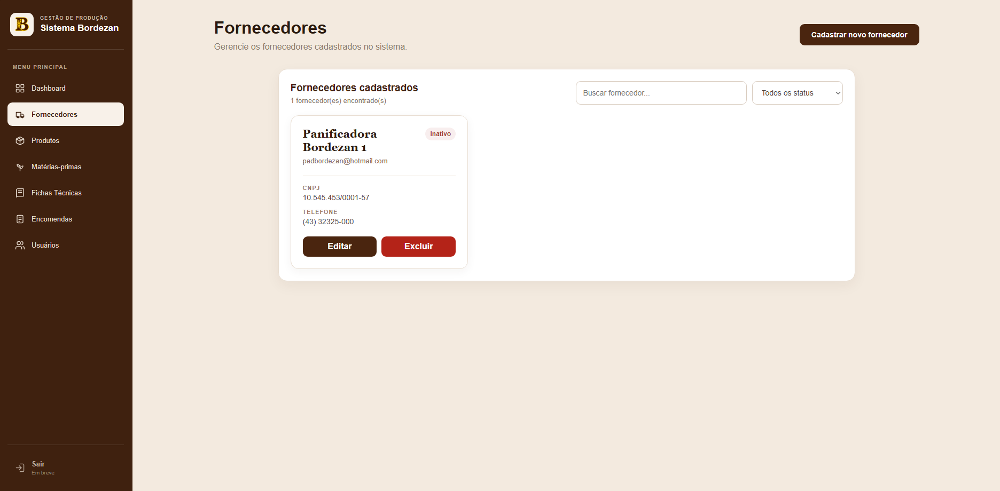
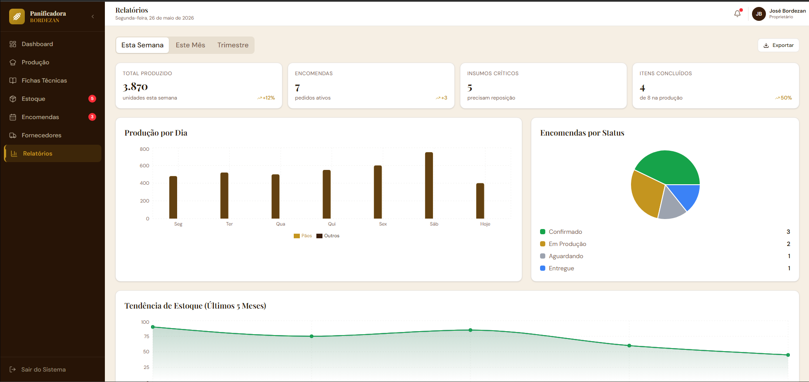

O problema
Parte dos processos administrativos e operacionais da empresa depende de controles manuais ou de ferramentas pouco integradas. Isso pode dificultar o acompanhamento de informações sobre estoque, produção, encomendas e fornecedores.
Uma aplicação web para organizar e apoiar a gestão dos processos internos da Panificadora Bordezan.
O projeto reúne funcionalidades de controle de estoque, produtos, matérias-primas, fichas técnicas, fornecedores, encomendas e produção em um único sistema.
Conheça o projetoCONTEXTO
Parte dos processos administrativos e operacionais da empresa depende de controles manuais ou de ferramentas pouco integradas. Isso pode dificultar o acompanhamento de informações sobre estoque, produção, encomendas e fornecedores.
Desenvolver uma aplicação web que centralize informações, facilite o controle das operações e contribua para a organização das atividades realizadas diariamente pelos colaboradores.
Ferramentas escolhidas para o desenvolvimento da aplicação.
O sistema é organizado em três partes principais: o front-end, responsável pela interface e interação com o usuário; o back-end, responsável pelas regras de negócio e pela comunicação com os dados; e o banco de dados, utilizado para armazenar as informações.
FUNCIONALIDADES
Abaixo estão os casos de uso previstos para o Sistema Bordezan, com seus respectivos atores e objetivos.
| Nome do caso de uso | Ator | Descrição |
|---|---|---|
| Gerenciar Estoque | Gerente | Controlar as informações relacionadas ao estoque da empresa. |
| Gerenciar Encomendas | Gerente | Acompanhar e gerenciar as encomendas registradas no sistema. |
| Gerenciar Produto | Gerente | Gerenciar os produtos comercializados pela empresa. |
| Gerenciar Matérias-Primas | Gerente | Gerenciar as matérias-primas utilizadas para produção. |
| Gerenciar Fichas Técnicas | Gerente | Gerenciar as fichas técnicas utilizadas na produção. |
| Gerenciar Fornecedores | Gerente | Controlar as informações dos fornecedores da empresa. |
| Visualizar Relatórios de Produção | Gerente | Visualizar relatórios relacionados à produção. |
| Registrar Encomenda | Atendente | Registrar encomendas realizadas pelos clientes. |
| Visualizar Encomendas | Atendente e Funcionário da Cozinha | Consultar as encomendas registradas no sistema. |
| Registrar Produção Realizada | Funcionário da Cozinha | Registrar a produção realizada. |
| Consultar Ficha Técnica | Funcionário da Cozinha | Consultar as fichas técnicas dos produtos. |
| Gerenciar Usuários | Administrador | Gerenciar os usuários do sistema. |
| Consultar Logs do Sistema | Administrador | Consultar os registros de atividades do sistema. |
| Caso de uso | Conclusão / previsão | Situação |
|---|---|---|
| Gerenciar Fornecedores | 26/06/2026 | Concluído |
| Gerenciar Produto | 26/08/2026 | Concluído |
| Gerenciar Matérias-Primas | 18/09/2026 | Concluído |
| Gerenciar Fichas Técnicas | 10/11/2026 | Concluído |
| Consultar Ficha Técnica | 15/11/2026 | Concluído |
| Gerenciar Estoque | 25/11/2026 | Em desenvolvimento |
| Registrar Produção Realizada | 02/12/2026 | Em desenvolvimento |
| Registrar Encomenda | 09/12/2026 | Em desenvolvimento |
| Visualizar Encomendas | 12/12/2026 | Em desenvolvimento |
| Gerenciar Encomendas | 16/12/2026 | Em desenvolvimento |
| Gerenciar Usuários | 22/12/2026 | Em desenvolvimento |
| Visualizar Relatórios de Produção | 05/01/2027 | Em desenvolvimento |
| Consultar Logs do Sistema | 07/01/2027 | Em desenvolvimento |
MODELAGEM
IMPLEMENTAÇÃO









Apenas funcionalidades prontas.
assets/video/apresentacao.mp4.DOCUMENTO
AUTORIA